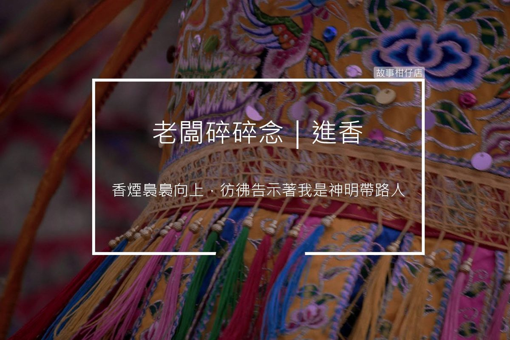

進香
2018-04-14

大家好，我是老闆「那個誰」，人生苦短，不如聽個「故事」解解悶？
「進喔～進喔～。」
這句話配合鐘鼓規律的敲擊，是每個大廟常聽見的聲音。
熟悉這聲音的你，不是有點歲數，就是信仰虔誠，只要這組聲音響起，就是神明們互相串門子的時刻。
從有印象開始，老闆我就手捧著家中的土地公，在春節時隨父母由北到南，從媽祖廟、祖師廟、關帝廟、王爺廟、玄天上帝廟一直到金身土地公廟，帶著神明到處旅行見見朋友。
請神明時手上的那炷香，香煙裊裊向上，彷彿告示著我是神明帶路人，而且無論你多小，路邊的人都必須給你三分面子，這讓小時的老闆我擁有了第一次被人尊重的感覺。
年歲漸大，父母體力不如當年，兒女也都在忙著自己的事務，但不論如何，每年這趟讓神明出門做小旅行的堅持，還是驅策著他們上路。神龕上的神明們，除臉龐被信仰的力量薰黑黑之外，不曾改變臉上的威嚴與笑容。不知祂們是否也期待這趟串門子的時光？
人在時間的催逼中，不斷地奔跑向前，只有某個假期的moment，才能讓我們回頭去尋找那些珍愛的朋友與人們，重新積蓄一些面對明天的力量，可能熱愛世人的神明們，也與我們相仿吧。
老闆我每次回到家中，總望著龕上的土地公，心想祂垂眼看著歷經起起落落的我們家，會說甚麼呢？
--無論你是誰，給我你的故事，我告訴你你想要的故事--